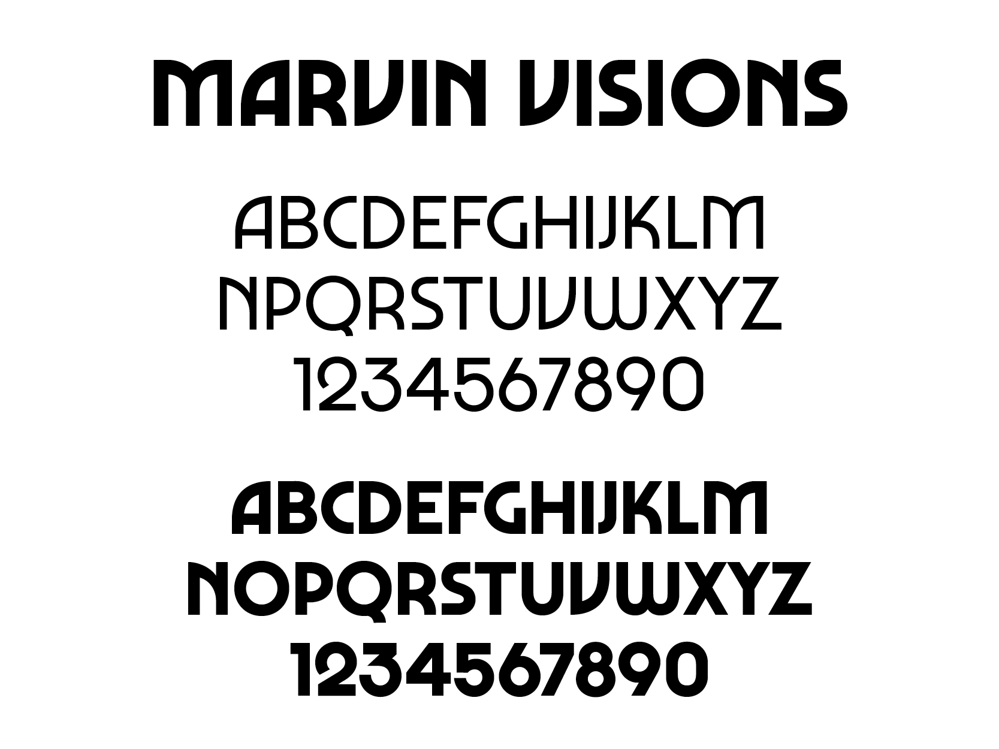

Le label Banzai Lab nous a confié la réalisation d’un visuel typographique pour illustrer le vinyle album War is Over du groupe Smockey Joe and The Kid. Smokey Joe and the Kid, sont deux beatmakers Bordelais passionnés de Hip Hop et de groove.
Pour leur nouvel album, ils s’éloignent de la sonorité vintage des années vingt, années trente, et s’inspirent davantage de la période 60’s / 70’s de la musique noire américaine.
On sent l’influence de la Soul et du Funk, tout en gardant cette patte unique de l’alliance entre le côté « Vintage » et la modernité d’un beatmaking contemporain.
Pour réaliser notre lettrage, nous nous sommes inspirées de la typographie Marvin Visions, développée par Mathieu Triay. Il s’agit d’une réinterprétation plus robuste de la typographie Marvin, créée par Michael Chave en 1969 et publiée par Face Photosetting.
Cette typographie reprend beaucoup de code de la Soul et de la Funk, tout en y alliant une touche de modernité. Elle possède des formes dynamiques et géométriques mais également des formes plus gracieuses et courbes. Elle inspire rythmes et vibrations de la musique des années soixante et soixante-dix.
Cette typographie reprend beaucoup de code de la Soul et de la Funk, tout en y alliant une touche de modernité. Elle possède des formes dynamiques et géométriques mais également des formes plus gracieuses et courbes. Elle inspire rythmes et vibrations de la musique des années soixante et soixante-dix.
Direction artistique et réalisation
par Morgane Barcelon--Madrange,
Pauline Peres et Nedjma Tafforin